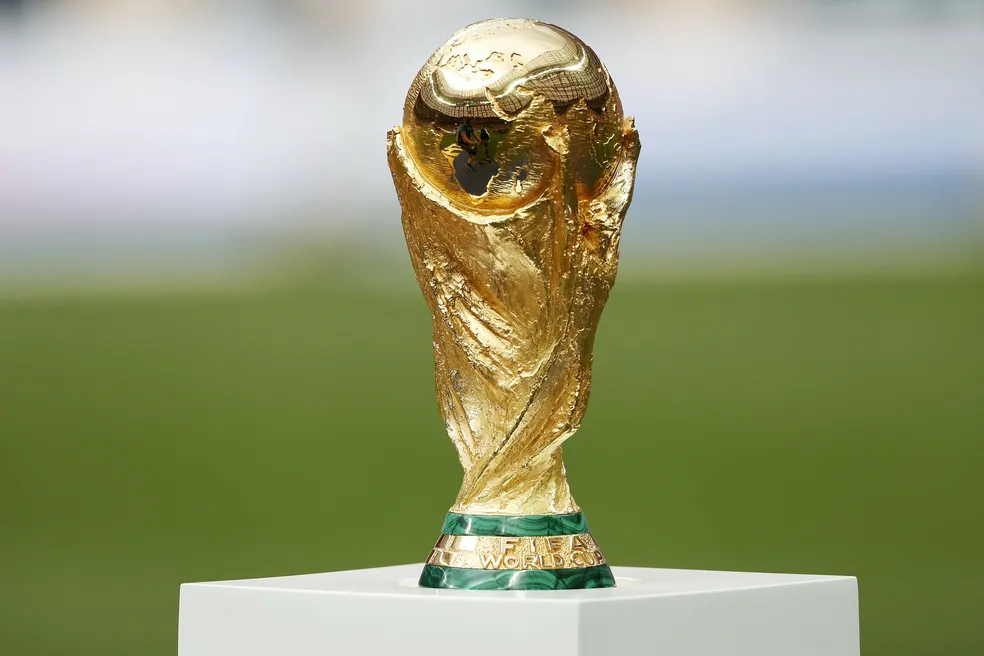
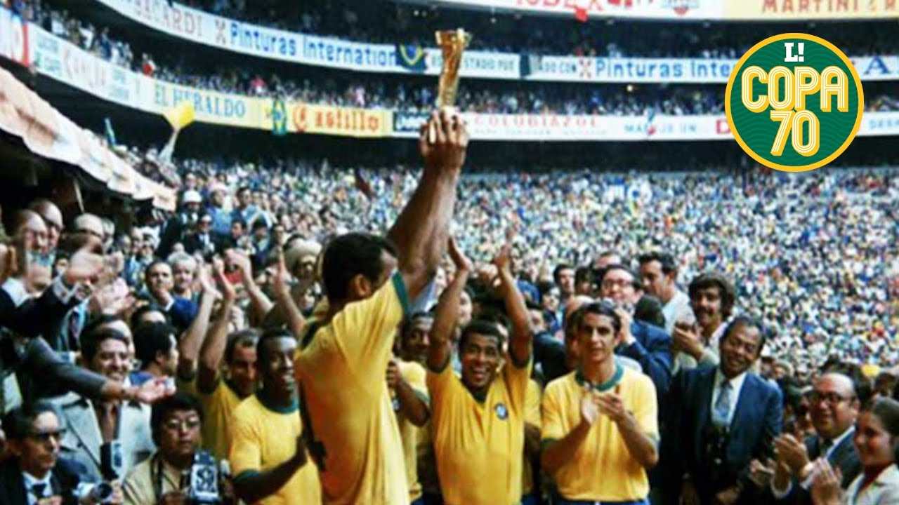
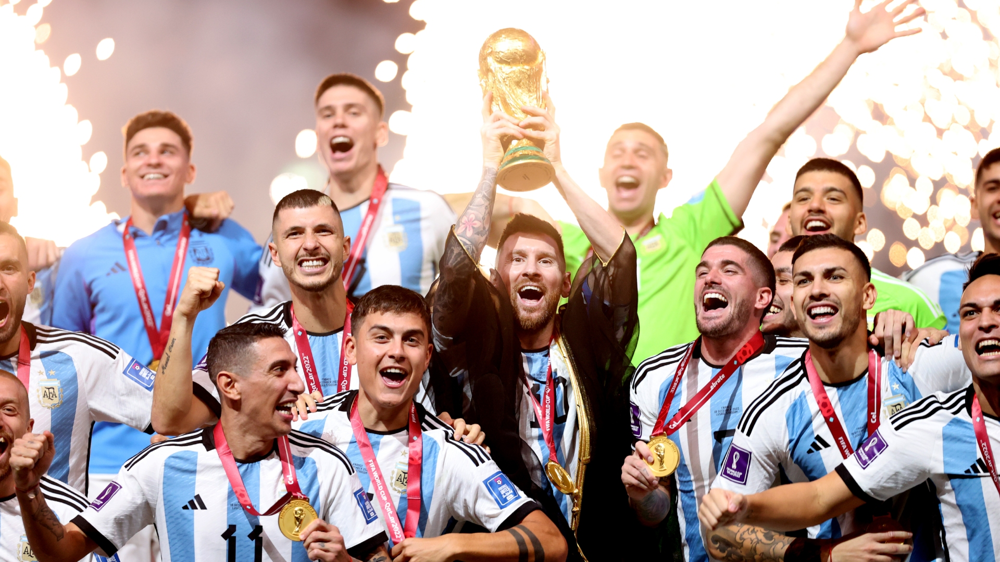
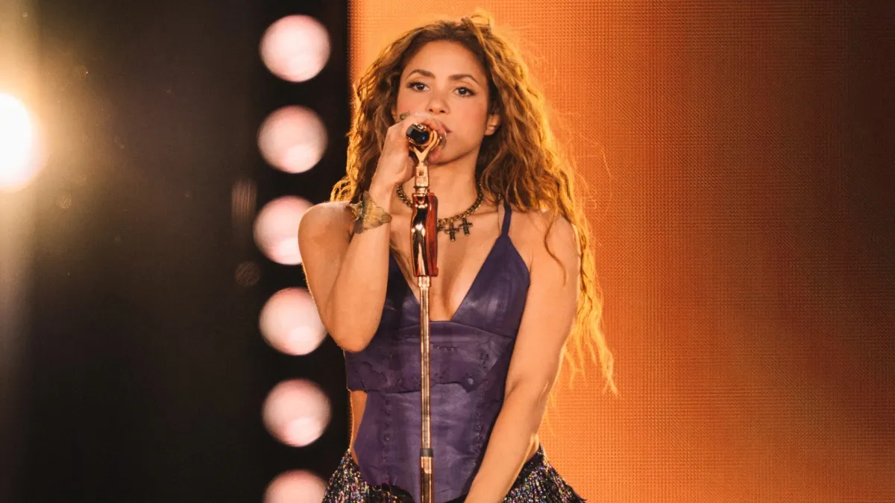

1958
1958
Suécia
Brasil conquista seu primeiro título mundial e inicia uma era histórica.
Memória do Torneio
Uma competição que atravessa gerações, unindo países, culturas e paixões.
A primeira Copa aconteceu em 1930, no Uruguai. Desde então, o torneio se consolidou como o maior evento esportivo do planeta.
Ao longo das décadas, a competição evoluiu em organização, tecnologia e alcance global, mantendo a essência de rivalidade e emoção.
Além do futebol, a Copa impulsiona turismo, inovação e integração cultural. Cada edição deixa legados esportivos e sociais para os países-sede.
Conhecer Seleções
1958
Brasil conquista seu primeiro título mundial e inicia uma era histórica.

1970Brasil conquista o tri e eterniza uma das maiores seleções.

2022Final histórica decidida nos pênaltis e título da Argentina.

Se Copa fosse playlist, a Shakira estaria no topo sem discussão. Ela virou trilha sonora oficial da emoção em vários torneios.
Com energia, refrões grudentos e vibe de estádio, a cantora marcou gerações de torcedores e ajudou a transformar abertura de Copa em evento pop global.